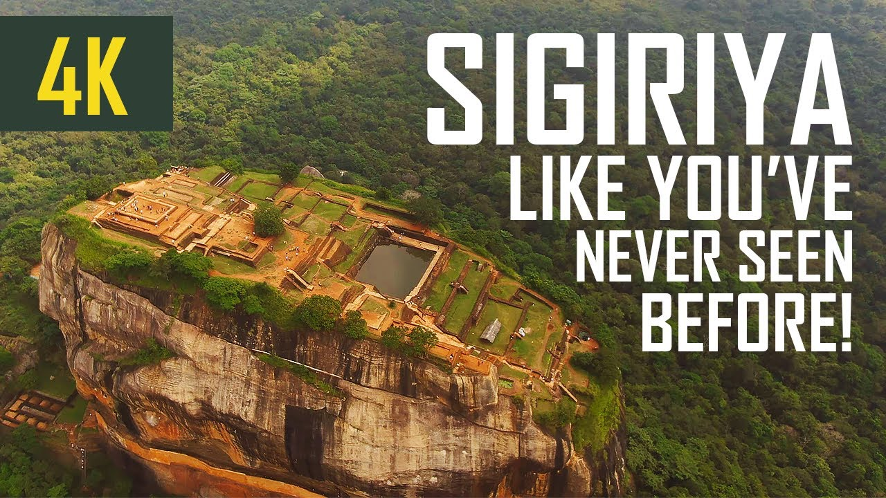
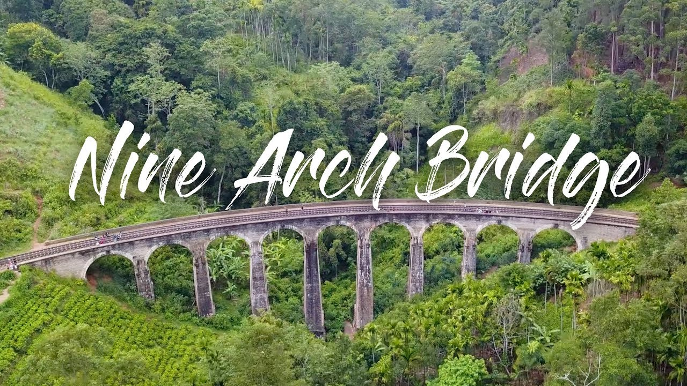
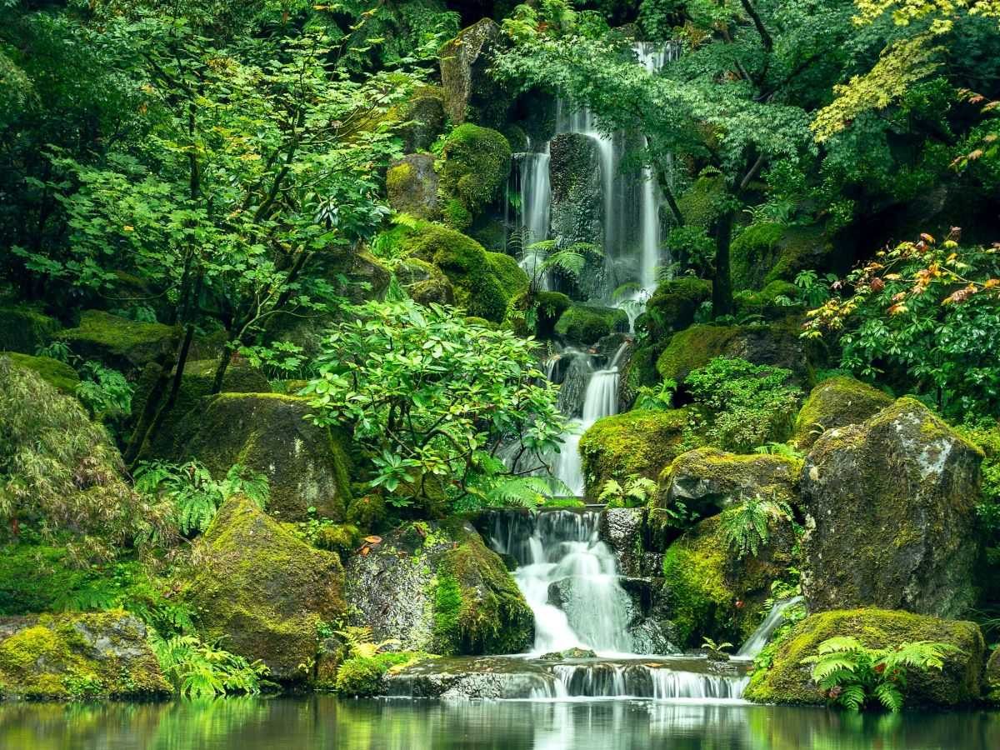

Sigiriya is one of the most valuable historical monuments of Sri Lanka.
Referred by locals as the Eighth Wonder of the World, this ancient palace and fortress complex
has significant archaeological importance and attracts thousands of tourists every year. It is
probably the most visited tourist destination in Sri Lanka.The palace is located in the heart of the island between the
towns of Dambulla and Habarane on a massive rocky plateau 370 meters above sea level.Sigiriya rock plateau,
formed from the magma of an extinct volcano, is 200 meters higher than the surrounding jungles.
Its view astonishes the visitors with the unique harmony between nature and human imagination.
The fortress complex includes remnants of a ruined palace, surrounded by an extensive network of fortifications,
vast gardens, ponds, canals, alleys, and fountains.

Kandy, the last royal capital of Sri Lanka is a major
tourist destination. ( 115kM from Colombo at 465 meters above sea level).
Famous for the Temple of the Tooth and many other temples the city could be called the cultural capital
of the island.Kandy Perahera, the pageant of the temple of tooth where Buddha’s tooth is kept is held
either in July or August each year to parade the golden caskets is a must see itenary if one is visiting
Sri Lanka during these months. The final night procession is the most spectacular event of the country.
More than 50 elephants parade the city accompanied by the drummers, dancers and chieftains.he city established in the 15th
century was the last royal capital where 2500 years of royal rule ended. This bustling market town is rich in cultural
diversity has plenty of iteneries to offer to the tourists from songs dances and handy crafts to ancient temples and
adventure activities. Kandy is a good transit point to the cultural triangle to the north or hill country to the south.
The city is also a good source of souvenirs or to experience many cultural performances at it’s various hotels in the city.

Galle is the capital of a district with the same name
and is also called the Gateway to the South. This port city, 119 km from Colombo,
has managed to retain its old colonial town feel even today and is also known for its Dutch walled fortress.
It is believed that Galle is the biblical seaport of Tarshish, from which King Solomon obtained gold, ivory,
peacocks and other valuables. Being on the strategic sea-route between Arabia, India and Southeast Asia, as well
a natural harbour, Galle became an important trading port for Persians, Arabs, Greeks, Romans, Malays, Indians and Chinese.Beyond Galle,
lies a stretch of coast with a series of beaches like Unawatuna and Thalpe, the latter also being famous for its stilt fishermen.
In cricketing circles, Galle is known for its cricket ground, which has rebuilt itself successfully after the tsunami destruction.
Other prominent landmarks are the natural harbour, the National Maritime Museum,
St. Mary’s Cathedral, Amangalla the historic luxury hotel and one of Sri Lanka’s
main Shiva temples. Other natural attractions, temples and forts are also tourist hotspots.
Don’t defiance the beautiful tourism site in Sri Lanka,
Little Adams Peak whether considering the word ‘Little’,it is named after the
sacred Adams Peak (Sri Pada –where the foot print of Lord Buddha is preserved)
regarding the similarity between the two mountains. Therefore the mountain was
called as Little Adams Peak.“Punchi Sri Pada” is another name for this peak. It is 1141 m in height.
Little Adam’s Peak attracts many travelers who come to Sri Lanka. Gradually with an easy hike up to
the mountain of Little Adams Peak you can consummation a worth paanoramic view. You have to walk through
lush green tea plantations, waterfalls and paddy fields while enjoying the sceneries.
It will be priceless if you could visit the place in the morning when the clouds roll in.
Further places like Little Adams Peak deliberates ‘How far Sri Lanka is worth and rich with
beautiful natural destinations of Sri Lankan tourism. It will feel like a neck exercise for
the visitors as you have to rotate your body to seek the views outstanding for 360 degrees.

Pasikuda, meaning “green-algae-bay” is situated in Eastern seaboard
of Sri Lanka between Kalkuda and the Indian Ocean, approximately 35 kilometers from Batticaloa Town.
The turquoise blue waters of the bay attracts local and foreign tourist to this wide sandy place under
the hot tropical sun to surf, swim or just frolic in the water. Many other activities are available from
kite surfing, boogie boarding to surfing and sailing across in a canoe.Long out of reach due to the civil conflict in Sri Lanka,
is now re-emerging as a tourist hot spot in the East of Sri Lanka. Coconut palms and palmyrah tree adorn the shores of this area,
due to the semi-arid state, Sun screen and a large brimmed hat is recommended along with lots of liquid, to keep the heat under control
Pasikuda is the pin up of picture postcard beaches thanks to its soft white sand and translucent water.
Between May and September, this is the best place in Sri Lanka for a Sri Lankan beach holiday. Most days
are cloudless, the ocean is warm, and water clarity is very good which makes it ideal for snorkelling,
diving, sailing and a host of other water sports. The curve of Pasikuda bay means that swimming can be enjoyed throughout the year.

Jaffna is one of the most beautiful towns located right on the northern tip of Sri Lanka.
Jaffna is known for its predominant Tamil population and recognized as the cultural capital
for Tamilians in Sri Lanka. The hospitality of the locals will surely impress any tourist to
this place. They are just not wonderful people but are friendly too. If you are looking for a
destination which offers beauty and great hospitality to travelers then Jaffna should be in your travel plan.
Jaffna Library is considered as one of the most significant historical and important places to visit in Jaffna.
This library was opened in the year 1959. It was established by Alfred Duraiappah who was Mayor of Jaffna at that time.
Pilgrims from all parts of the world visit Nallur Temple. The prime feature of this Nallur Temple is
the golden arch and the extended Gopuram. People visit here mainly to explore this Gopuram.
The premise of this temple was built during the eighteenth century.

Tucked in the Central Province of Sri Lanka, the humble town of Dambulla is a treasure trove of
historical monuments that are definitely worth a visit. Of all the places to visit in Dambulla,
the amazing Dambulla cave temple complex must be first on your list. It is the largest and most
beautiful one in the country, with spectacular sculpture & painting strewn all over.Dambulla is also
home to the largest rose quartz mountain in South Asia and the Rangiri Dambulla International Stadium.
Equally worthy of time and attention are the majestic Sigiriya fort and the Minneriya national park located close by.
Towering above the plains of Dambulla is this awe-inspiring UNESCO World Heritage site,
the Dambulla Cave Temple Complex. This ancient Buddhist pilgrimage is the largest and best
preserved cave temple complex in Sri Lanka. The five major caves are dotted with 150 plus
stunning Buddha statues (and a few depicting Sri Lankan kings, gods and goddesses) as well
as huge cave paintings & murals making this is one of the must-visit Dambula tourist places.
The intricate cave paintings, serene statues of Buddha and the sacred vibes makes these caves
a beautiful spiritual sanctuary and one of the best temples in Sri Lanka.

Lake Gregory sometimes also called Gregory Lake or Gregory Reservoir,
is a reservoir in heart of the tea country hill city, Nuwara Eliya,
Sri Lanka. Lake Gregory was constructed during the period of British
Governor Sir William Gregory in 1873.[2] The lake and the surrounding area make up the
Gregory Lake Area.Today, it’s a lovely spot for people to relax,
with many activities and a massive park lining it. Spanning 225 acres,
Lake Gregory is the place to go for water activities in Nuwara Eliya,
with the park serving as a great spot for picnics. You can find little
ponies trotting along on the grass and boats that you could hire to go
out on the lake and enjoy some serenity away from the noise. Jet Skis are a
lso available for hire, and you could take part in some windsurfing here as well!If you need to get away from the sun,
there are private little huts where you can relax, and if you’re hungry, there is no shortage of food stalls in the park,
selling you a variety of snacks and local delicacies

Ella has all the best parts of Sri Lanka rolled into one: beautiful jungle mountains,
rolling tea plantations, and epic waterfalls. As one of the biggest tea producers,
travelers can look forward to spending their days among the greenest surroundings,
enjoying the views from hilltop houses and adventurous hiking trails. Even the train
ride to Ella is one of life’s most remarkable experiences, as you travel by iconic blue
train through bamboo forests and tropical mist. Enjoy all the top things to do in Ella with this
complete travel guide.Ella is full of amazing things to do, from hiking the green mountain
peaks to jumping in refreshing waterfalls. The town itself has a bustling atmosphere,
with plenty of great cafes and restaurants to enjoy after a day in nature.
The town of Ella has to be one of the most picturesque settings in Sri Lanka.
Aside from the incredible nature that draws travelers from all over the world,
the town has an entertaining atmosphere with great cafes and restaurants.
If you’re also looking for lively nightlife, head for one of the bars on the
main street. For example, Cafe Chill serves tasty cocktails, smoothies, and a
variety of cuisines and plays music into the early hours.

Commissioned under the British in the year 1921,
the Nine Arch Bridge stands proudly, a testament to the engineering and
architectural brilliance of the early 20th century. Ideally placed between
the Ella and Demodara railway station, those choosing to walk along the
bridge will be presented with scenes of rolling hills and dense jungle to delight in.
The Nine Arch Bridge, also known as the ‘Bridge in the Sky’ was constructed by connecting
two bog mountains when constructing the Badulla – Colombo railway. This bridge is 300 feet in
length, 25 feet in width and 80-100 feet in height. It is one of the best examples of colonial-era
railway construction in the country. The Bridge can be reached by travelling 2km on Gotuwala road
starting from Halpe Textile centre in Badulla Bandarawela road. The surrounding area has seen a
steady increase in tourism due to the bridge’s architectural ingenuity and the profuse greenery in the nearby hillsides.

The Babarakanda Falls, considered to be the tallest waterfall in Sri Lanka,
is located in the Kalupahanaya area of the Badulla District in the Uva Province.
At 263 meters 863 feet, it is considered to be the 299th tallest waterfall in the world.
It is a tributary of the Walawe River, a small stream. It is also known as Bambaragala Falls,
Bambarakele Falls, Bambara Falls and Dultota Falls. Bambarakanda Waterfall is located in the
Weerakongama Grama Niladhari Division of the Haldummulla Divisional Secretariat, near the border
of the Badulla District in Sri Lanka.This 425 meter long road leading to the waterfall is home to many
endemic bird species. The place is also very popular among tourists due to the shallow pool
at the foot of the waterfall.
It would be a shame to travel all the way to Sri Lanka and not see
at LEAST one or two of its beautiful waterfalls. During our two months
of travel throughout the country, we were able to visit 20 of these amazing
natural beauties! One waterfall that was particularly impressive to us was Bomburu Ella,
located near Nuwara Eliya in the hill country of Sri Lanka.
While it is only 50m high, it is the widest waterfall in the
whole country and is truly MASSIVE.. especially when you are looking at it
from up close. Bomburu Ella Waterfall is one of the best waterfalls in all
of Sri Lanka, and conveniently located less than an 30 minutes outside of Nuwara Eliya.
Of all the waterfalls you can visit from Nuwara Eliya, this is the one we would recommend.
Spotting a leopard prowling in the Park of Yala is quite an ordinary spectacle.
Witness the untamed world of nature in the Yala National Park and quench your
eagerness to explore and learn more about wildlife. Yala National Park is located in the South-East part of Sri Lanka.
Amidst both nature and wildlife, you will also find some faint cultural ruins which give the travellers a
deeper insight about the earlier civilization. the Yala National Park lies in the south-eastern part of
Sri Lanka closely hugging the Indian Ocean. It is amongst the famous Sri Lanka tourist places that attracts
a lot of tourists every year.Yala National Park is home to an extensive variety of 44 varieties
of mammal and over 215 bird species, including at least 7 endemics. Among the residents are one
of the highest densities of elusive leopards, resident herds of majestic elephants, sloth bears,
sambars, jackals, spotted deer, and crocodiles.

Declared as a World Heritage Site by UNESCO, Sinharaja Forest Reserve
(kingdom of the lion), is a paradise for nature and wildlife lovers.
It is home to a vast number of endemic species of birds and mammals of
Sri Lanka. About 95 per cent of Sri Lankan endemic birds and more than
50 per cent of endemic mammals are known to have their habitats in this
Forest Reserve. Year round, the forest is covered by plenty of rain clouds.
It is one of the famous places to visit in Galle. You can experience the
leisurely pace of wildlife and the splendour of dense and copious evergreen rainforests.
Located in south-west Sri Lanka, Sinharaja is the country's last viable area of primary tropical rainforest.
More than 60% of the trees are endemic and many of them are considered rare. There is much endemic wildlife,
especially birds, but the reserve is also home to over 50% of Sri Lanka's endemic species of mammals and butterflies,
as well as many kinds of insects, reptiles and rare amphibians
Knuckles range also called Dumbara mountain range is located off Kandy,
in the northern end of Central Highlands of of Sri Lanka. To the south and
east of the mountain range is Mahaweli river basin while to the west are Matale plains.
The Knuckles range is one of the loveliest nature attractions of Sri Lanka. The changing terrain of grasslands,
rugged mountain peaks interspersed with streams and cascading waterfalls make Knuckles mountain range that covers
an area of 18512 hectares the trekker’s paradise.Knuckles mountain range, a World heritage Conservation Area that affords
intriguing trekking possibilities, is still to a greater extent untouched zone of significant natural beauty and biodiversity.
The serious trekkers and biodiversity enthusiasts would even take up a three day hike of 40 plus km trek with a guide.Popular hiking trails are
Mini world’s end from Deanston; Trail to Dothalugala from Deanston; Trail to Nitro Caves from Corbtt’s Gap; Trail to Augallena
cave via Thangappuwa from Corbett’s Gap; Trail to Kalupahana from “Meemure” village.